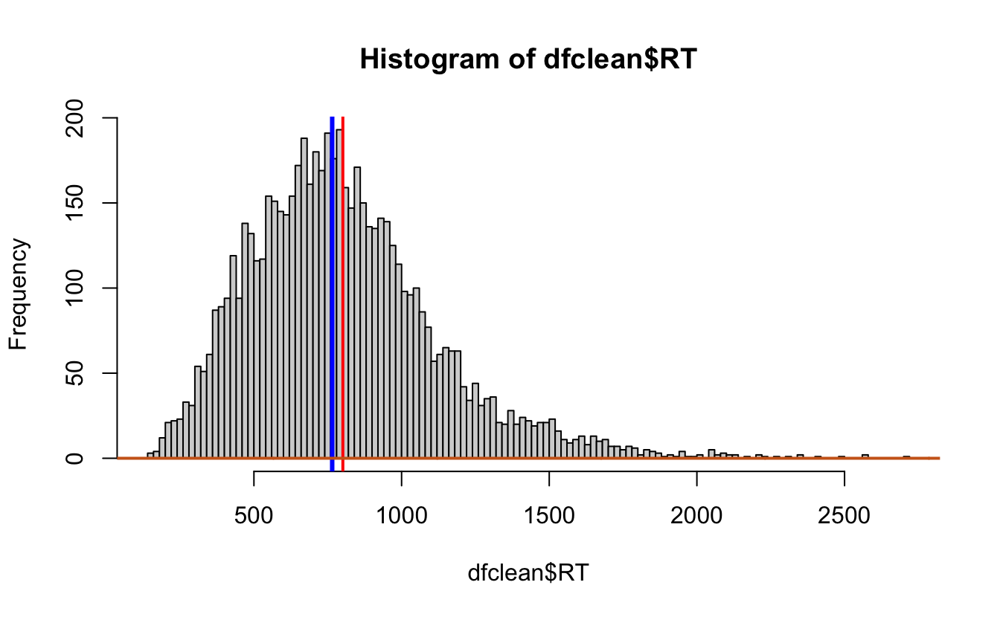
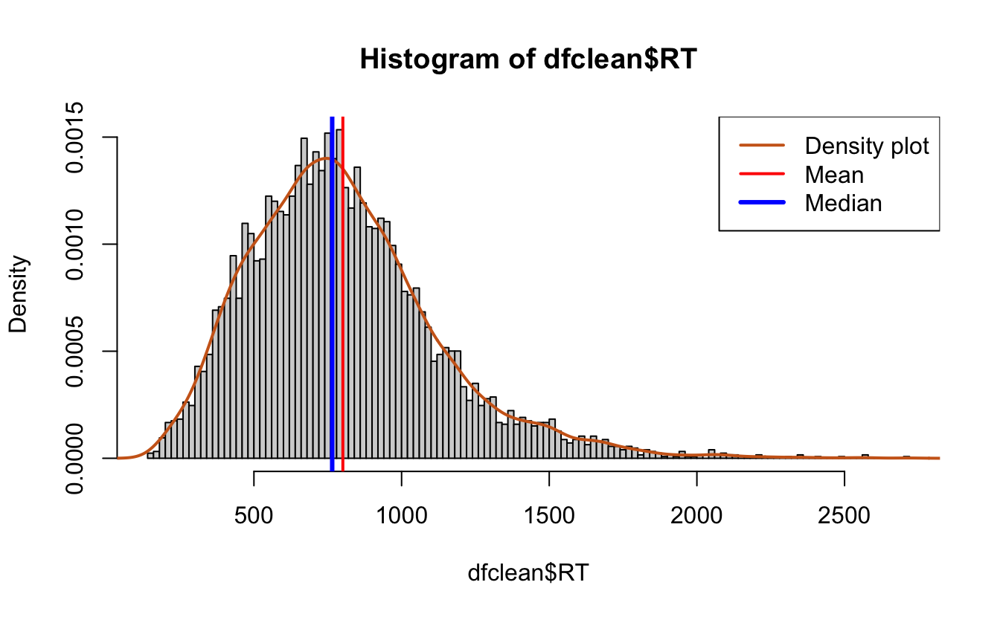

3 Data Transformation
“Happy families are all alike; every unhappy family is unhappy in its own way.”
— Leo Tolstoy
“Tidy datasets are all alike, but every messy dataset is messy in its own way.”
— Hadley Wickham
First off…
Advanced R Challenges
This challenge is to understand and use this function to read in a series of csv files and transform them into one data.frame.
#Joel's awesome function
combineCSV <- function(fPath){ #see the r base cheatsheet for function syntax
# List all files in the path
f <- list.files(path = fPath, recursive = TRUE) #see ?list.files
#separate files list and place into tibble (This is all the names and subids in the titles of the files)
f_split <- as_tibble(str_split(f, "_|/", simplify = TRUE)) %>% #see ?str_split from stringr package, separated by "_"
mutate(.id = row_number()) %>% #How does making a row number column help this process?
select(".id", everything()) #How does everything() work?
#read in all files to list
fls <- lapply(str_c(fPath, f), read.csv, header = FALSE) #see ?str_c from stringr and ?lapply from the apply family
#convert list to data frame
d <- as.data.frame(rbindlist(fls, fill = TRUE, idcol = TRUE)) #see ?rbind_list from the data.table package
#join data with identifying information
e <- f_split %>% #Join df of names and ids with df of data
full_join(d, by = ".id") #See ?full_join
}Data Transformation with Dplyr
First, we clean the environment and get the tidyverse,
which has dplyr.
rm(list = ls())
library(tidyverse)
#> ── Attaching packages ─────────────────────────────────────── tidyverse 1.3.1 ──
#> ✓ ggplot2 3.3.5 ✓ purrr 0.3.4
#> ✓ tibble 3.1.6 ✓ dplyr 1.0.7
#> ✓ tidyr 1.1.3 ✓ stringr 1.4.0
#> ✓ readr 1.4.0 ✓ forcats 0.5.1
#> ── Conflicts ────────────────────────────────────────── tidyverse_conflicts() ──
#> x dplyr::filter() masks stats::filter()
#> x dplyr::lag() masks stats::lag()3.1 Get a dataset from your .RData file
ready.Rdata has multiple dataframes within it. This is the
helpful thing about .RData files. They can contain all of
the dataframes you need for a project or analysis.
df <- as_tibble(ccolor %>%
select(subject = s, congruency = con, stimulus =S,
response = R, reactionTime = RT))
tbl_df(ccolor) #Converts data to tbl class - Easier to view
#> Warning: `tbl_df()` was deprecated in dplyr 1.0.0.
#> Please use `tibble::as_tibble()` instead.
#> This warning is displayed once every 8 hours.
#> Call `lifecycle::last_lifecycle_warnings()` to see where this warning was generated.
#> # A tibble: 6,400 × 5
#> s con S R RT
#> <fct> <chr> <fct> <chr> <dbl>
#> 1 1 congruent blue blue 1023
#> 2 1 incongruent blue red 665
#> 3 1 congruent red red 1568
#> 4 1 congruent blue blue 955
#> 5 1 incongruent red blue 792
#> 6 1 congruent red red 452
#> # … with 6,394 more rowsYou can compare the classes…
or get a glimpse of the data…
glimpse(ccolor) #Gives the same information as clicking the blue circle in the environment panel
#> Rows: 6,400
#> Columns: 5
#> $ s <fct> 1, 1, 1, 1, 1, 1, 1, 1, 1, 1, 1, 1, 1, 1, 1, 1, 1, 1, 1, 1, 1, 1, …
#> $ con <chr> "congruent", "incongruent", "congruent", "congruent", "incongruent…
#> $ S <fct> blue, blue, red, blue, red, red, blue, red, blue, red, blue, blue,…
#> $ R <chr> "blue", "red", "red", "blue", "blue", "red", "blue", "red", "blue"…
#> $ RT <dbl> 1023, 665, 1568, 955, 792, 452, 369, 1067, 414, 763, 766, 563, 115…or get the full thing…
3.2 Introduction to “The Pipe”
The pipe, aka %>%, takes you a level into the data, so…
ccolor %>%
summarise(count = n()) # is the same as...
#> count
#> 1 6400
summarise(ccolor, count = n())
#> count
#> 1 6400Now let’s do some descriptives…
ccolor %>%
group_by(s) %>%
summarise(nrow(.))
#> # A tibble: 20 × 2
#> s `nrow(.)`
#> <fct> <int>
#> 1 1 6400
#> 2 2 6400
#> 3 3 6400
#> 4 4 6400
#> 5 5 6400
#> 6 6 6400
#> # ℹ 14 more rows
summarise(count = n()) %>% #Let's name this something easy to type and remember, like "count"
pivot_wider(names_from = s, values_from = count)
#> # A tibble: 1 × 20
#> `1` `2` `3` `4` `5` `6` `7` `8` `9` `10` `11` `12` `13`
#> <int> <int> <int> <int> <int> <int> <int> <int> <int> <int> <int> <int> <int>
#> 1 320 320 320 320 320 320 320 320 320 320 320 320 320
#> # ℹ 7 more variables: `14` <int>, `15` <int>, `16` <int>, `17` <int>,
#> # `18` <int>, `19` <int>, `20` <int>We can also wrap functions around the whole data object…
as.matrix(ccolor %>%
group_by(s) %>%
summarise(count = n()) %>%
pivot_wider(names_from = s, values_from = count)) #or we can subset it
#> 1 2 3 4 5 6 7 8 9 10 11 12 13 14 15 16 17 18
#> [1,] 320 320 320 320 320 320 320 320 320 320 320 320 320 320 320 320 320 320
#> 19 20
#> [1,] 320 320
data.frame(ccolor %>%
group_by(s) %>%
summarise(count = n()) %>%
pivot_wider(names_from = s, values_from = count))[,4:7]
#> X4 X5 X6 X7
#> 1 320 320 320 320What happened to the names? What is that X4, X5, stuff? That’s what R does when it doesn’t know the column names, but in this case it actually does. Check with colnames()
colnames(ccolor %>%
group_by(s) %>%
summarise(count = n()) %>% #Let's name this something easy to type and remember, like "count"
pivot_wider(names_from = s, values_from = count))
#> [1] "1" "2" "3" "4" "5" "6" "7" "8" "9" "10" "11" "12" "13" "14" "15"
#> [16] "16" "17" "18" "19" "20"None of these changes are being saved! You can make new objects with the
<- operator.
Above I used group_by(s), which groups by participant,
summarise() with n(), which counts the
number of rows, and pivot_wider(), which takes the column s,
turns each row into a column, and puts the value argument in that
column.
There’s also filter(), gather(),
separate(), unite(), select(),
distinct(), sample_n(), slice(),
and many more.
For example:
as_tibble(ccolor %>%
filter(s == 1))# "==" is a logic operator, which works with most classes of data
#> # A tibble: 320 × 5
#> s con S R RT
#> <fct> <chr> <fct> <chr> <dbl>
#> 1 1 congruent blue blue 1023
#> 2 1 incongruent blue red 665
#> 3 1 congruent red red 1568
#> 4 1 congruent blue blue 955
#> 5 1 incongruent red blue 792
#> 6 1 congruent red red 452
#> # … with 314 more rows
class(ccolor$s)
#> [1] "factor"3.3 Aside on the apply family
<ASIDE> - for those of you interested in replacing your For Loops,
this is how you’d do it. Here’s a quick introduction to the apply
family. We can apply class() to muliple columns.
Say we want to get the class of every column…
apply(ccolor, MARGIN = 2, FUN = class) #Something about changing it to an array loses its class attributes
#> s con S R RT
#> "character" "character" "character" "character" "character"
lapply(ccolor, FUN = class) #list apply makes the output of the call a list
#> $s
#> [1] "factor"
#>
#> $con
#> [1] "character"
#>
#> $S
#> [1] "factor"
#>
#> $R
#> [1] "character"
#>
#> $RT
#> [1] "numeric"
sapply(ccolor,FUN = class) #simple apply tries to output the simplest outcome
#> s con S R RT
#> "factor" "character" "factor" "character" "numeric"The bottom two assume you mean the columns, while the top one you have to specify. tapply is different, because you index (or group) by another variable. Say we want mean RT by subject…
tapply(X = ccolor$RT, INDEX = ccolor$s, FUN = mean) #We'd do it like that.
#> 1 2 3 4 5 6 7 8 9 10 11 12 13 14 15 16
#> 790 731 485 847 824 536 1065 1325 1090 1002 840 914 900 1012 953 NA
#> 17 18 19 20
#> 996 980 719 623mapply stands for “multivariate apply’, and works like this:
# Create a 4x4 matrix
Q1 <- matrix(c(rep(1, 4), rep(2, 4), rep(3, 4), rep(4, 4)),4,4)
Q1 #Or you could use mapply()
#> [,1] [,2] [,3] [,4]
#> [1,] 1 2 3 4
#> [2,] 1 2 3 4
#> [3,] 1 2 3 4
#> [4,] 1 2 3 4
mapply(rep, 1:4,4) #repeat 1 through 4, 4 times
#> [,1] [,2] [,3] [,4]
#> [1,] 1 2 3 4
#> [2,] 1 2 3 4
#> [3,] 1 2 3 4
#> [4,] 1 2 3 4Say you want to mean-center some data
Find means per column with apply()
Find standard deviation with apply()
Center the points
dataPoints_Trans1 <- sweep(dataPoints, 2, dataPoints_means,"-") #subtract mean from points in columnsReturn the result
dataPoints_Trans1
#> [,1] [,2] [,3] [,4] [,5] [,6]
#> [1,] -0.807 1.43794 -0.758 -1.3013 0.0376 0.580
#> [2,] 0.849 -1.53229 0.425 0.0397 -0.0676 -0.258
#> [3,] -1.844 0.04220 1.861 0.5091 -1.7351 0.662
#> [4,] 0.588 0.04533 -1.835 1.1047 0.3072 -0.149
#> [5,] 1.215 0.00682 0.308 -0.3523 1.4579 -0.835Normalize
dataPoints_Trans2 <- sweep(dataPoints_Trans1, 2, dataPoints_sdev, "/") #divide new point values by standard deviation in columnsReturn the result
dataPoints_Trans2
#> [,1] [,2] [,3] [,4] [,5] [,6]
#> [1,] -0.628 1.36800 -0.547 -1.4329 0.0328 0.929
#> [2,] 0.661 -1.45776 0.306 0.0437 -0.0591 -0.413
#> [3,] -1.436 0.04015 1.343 0.5607 -1.5165 1.060
#> [4,] 0.458 0.04312 -1.325 1.2165 0.2685 -0.239
#> [5,] 0.946 0.00649 0.222 -0.3880 1.2742 -1.337Now you have mean-centered data points, probably for a regression model.
</ASIDE>
3.4 Extracting rows
One thing we always want to do is extract rows based on some criteria. For example, in Reaction Time data we often trim the early responses as anticipatory, and the late responses as outliers.
Challenge 1: Find and remove the rows with NAs, save it out to “newdf”
Challenge 2: Filter out RT’s below 150 milliseconds and show how many you’ve filtered out.
Challenge 3: Get the number of observations (rows) kept and removed
with group_by()
In papers, you want to report the proportion of data you have removed and the criteria with which you removed that data.
Now you have the slow responses, but a more appropriate standard might be removing data above three standard deviations from the mean for each participant’s own distribution. Let’s try that now…
newdf %>% #Step 1 is to group by the subject and get the mean and sd
group_by(s) %>%
mutate(mRT = mean(RT), RTsd = sd(RT))
#> # A tibble: 6,399 × 7
#> # Groups: s [20]
#> s con S R RT mRT RTsd
#> <fct> <chr> <fct> <chr> <dbl> <dbl> <dbl>
#> 1 1 congruent blue blue 1023 790. 775.
#> 2 1 incongruent blue red 665 790. 775.
#> 3 1 congruent red red 1568 790. 775.
#> 4 1 congruent blue blue 955 790. 775.
#> 5 1 incongruent red blue 792 790. 775.
#> 6 1 congruent red red 452 790. 775.
#> # ℹ 6,393 more rows
newdf %>% #Step 2 is to make a cutoff 3 standard deviations above the mean for each participant
group_by(s) %>%
mutate(mRT = mean(RT), RTsd = sd(RT)) %>%
mutate(cutoff = mRT + 3*RTsd)
#> # A tibble: 6,399 × 8
#> # Groups: s [20]
#> s con S R RT mRT RTsd cutoff
#> <fct> <chr> <fct> <chr> <dbl> <dbl> <dbl> <dbl>
#> 1 1 congruent blue blue 1023 790. 775. 3115.
#> 2 1 incongruent blue red 665 790. 775. 3115.
#> 3 1 congruent red red 1568 790. 775. 3115.
#> 4 1 congruent blue blue 955 790. 775. 3115.
#> 5 1 incongruent red blue 792 790. 775. 3115.
#> 6 1 congruent red red 452 790. 775. 3115.
#> # ℹ 6,393 more rows
newdf %>% #Step 3 Let's clean up the columns we need and the ones we don't
group_by(s) %>%
mutate(mRT = mean(RT), RTsd = sd(RT)) %>%
mutate(cutoff = mRT + 3*RTsd) %>%
select(-mRT, -RTsd)
#> # A tibble: 6,399 × 6
#> # Groups: s [20]
#> s con S R RT cutoff
#> <fct> <chr> <fct> <chr> <dbl> <dbl>
#> 1 1 congruent blue blue 1023 3115.
#> 2 1 incongruent blue red 665 3115.
#> 3 1 congruent red red 1568 3115.
#> 4 1 congruent blue blue 955 3115.
#> 5 1 incongruent red blue 792 3115.
#> 6 1 congruent red red 452 3115.
#> # ℹ 6,393 more rows
newdf %>% #Step 4 Now let's filter those RTs above the cutoff and count them
group_by(s) %>%
mutate(mRT = mean(RT), RTsd = sd(RT)) %>%
mutate(cutoff = mRT + 3*RTsd) %>%
select(-mRT, -RTsd) %>%
filter(RT > cutoff) %>%
summarise(n = n()) %>% #spread it out so its easy to read
pivot_wider(names_from = s, values_from = n)
#> # A tibble: 1 × 20
#> `1` `2` `3` `4` `5` `6` `7` `8` `9` `10` `11` `12` `13`
#> <int> <int> <int> <int> <int> <int> <int> <int> <int> <int> <int> <int> <int>
#> 1 4 4 4 4 7 6 6 3 8 5 1 7 4
#> # ℹ 7 more variables: `14` <int>, `15` <int>, `16` <int>, `17` <int>,
#> # `18` <int>, `19` <int>, `20` <int>
newdf %>% #We can see the proportion of removed data
group_by(s) %>%
mutate(mRT = mean(RT), RTsd = sd(RT)) %>%
mutate(cutoff = mRT + 3*RTsd) %>%
select(-mRT, -RTsd) %>%
group_by(RT > cutoff | RT < 150) %>%
summarise(n = n()) %>%
mutate(prop = (n/sum(n))*100)
#> # A tibble: 2 × 3
#> `RT > cutoff | RT < 150` n prop
#> <lgl> <int> <dbl>
#> 1 FALSE 6289 98.3
#> 2 TRUE 110 1.72
dfclean <- newdf %>% #Save it out as dfclean
group_by(s) %>%
mutate(mRT = mean(RT), RTsd = sd(RT)) %>%
mutate(cutoff = mRT + 3*RTsd) %>%
select(-mRT, -RTsd) %>%
filter(RT < cutoff & RT > 150) #The RTs must be less than the cutoff AND greater than 150 msNow we’re ready to do some descriptive statistics with the groups
Challenge 4: What is the mean reaction time and standard deviation for congruent vs incongruent trials
Challenge 5: Get the mean and sd of participant means for congruent vs incongruent trials and compare to the previous outcome.
This is a quirk of repeated measures fully within designs, as the levels of analysis are nested. More on that later. We can quickly visualize some of these things, like the distribution of responses in base R. Note: Soon we will learn to visualize everything in ggplot2.
hist(dfclean$RT, breaks = 100)
#Add a line for the mean
hist(dfclean$RT, breaks = 100)
abline(v = mean(dfclean$RT),
col = "red",
lwd = 2)
#add a line for the median
abline(v = median(dfclean$RT),
col = "blue",
lwd = 3)
lines(density(dfclean$RT),
lwd = 2, # thickness of line
col = "chocolate3")# density plot
#Add a density plot,
hist(dfclean$RT, breaks = 100,
prob = T)
lines(density(dfclean$RT),
lwd = 2, # thickness of line
col = "chocolate3")# density plot
abline(v = mean(dfclean$RT),
col = "red",
lwd = 2)
#add a line for the median
abline(v = median(dfclean$RT),
col = "blue",
lwd = 3)
legend(x = "topright", # location of legend within plot area
c("Density plot", "Mean", "Median"),
col = c("chocolate3", "red", "blue"),
lwd = c(2, 2, 3))
3.5 Pivoting, Separating and Uniting
look at this tibble(data.frame)
stocks <- tibble(
year = c(2015, 2015, 2016, 2016),
half = c( 1, 2, 1, 2),
return = c(1.88, 0.59, 0.92, 0.17)
)pivot_wider and pivot_longer are not perfect opposites. They have been deprecated
and replaced by pivot_longer and pivot_wider
stocks %>%
pivot_wider(names_from = "year",values_from = "return") %>%
pivot_longer(cols = `2015`:`2016`,names_to = "year")
#> # A tibble: 4 × 3
#> half year value
#> <dbl> <chr> <dbl>
#> 1 1 2015 1.88
#> 2 1 2016 0.92
#> 3 2 2015 0.59
#> 4 2 2016 0.17You can make data.frames with space using the tribble()
function
people <- tribble(
~name, ~key, ~value,
#-----------------|--------|------
"Phillip Woods", "age", 45,
"Phillip Woods", "height", 186,
"Jessica Cordero", "age", 37,
"Jessica Cordero", "height", 156
)
people
#> # A tibble: 4 × 3
#> name key value
#> <chr> <chr> <dbl>
#> 1 Phillip Woods age 45
#> 2 Phillip Woods height 186
#> 3 Jessica Cordero age 37
#> 4 Jessica Cordero height 156Challenge 6: spread people so height and age have their own column
Challenge 7: gather newpeople so that height and age are back together
You can separate or unite columns based upon a separator
people %>%
separate(name, into = c("first","last"))
#> # A tibble: 4 × 4
#> first last key value
#> <chr> <chr> <chr> <dbl>
#> 1 Phillip Woods age 45
#> 2 Phillip Woods height 186
#> 3 Jessica Cordero age 37
#> 4 Jessica Cordero height 156How did it know? We usually have to specify the separator
Notice that the separator disappears
Challenge 8: Unite the two columns above with “d” as a separator
That’s a lot to take in, so we’ll do questions about this content or queries about how to accomplish different data transformations.
3.6 Solutions to Challenges
Challenge 1: Find and remove the rows with NAs, save it out to “newdf”
ccolor %>%
filter(!complete.cases(.))
ccolor %>%
filter(!is.na(RT))
as_tibble(ccolor %>%
na.omit())
newdf <- ccolor %>%
na.omit()Challenge 2: Filter out RT’s below 150 milliseconds and show how many you’ve filtered out.
Challenge 3: Get the number of observations (rows) kept and removed
with group_by()
Challenge 4: What is the mean reaction time and standard deviation for congruent vs incongruent trials
#hint group_by(the factor you're interested in)
dfclean %>%
group_by(con) %>%
summarise(mRT = mean(RT), RTsd = sd(RT))Challenge 5: Get the mean and sd of participant means for congruent vs incongruent trials and compare to the previous outcome.
dfclean %>%
group_by(s,con) %>%
summarise(gmRT = mean(RT)) %>%
group_by(con) %>%
summarise(mRT = mean(gmRT), RTsd = sd(gmRT))
#> `summarise()` has grouped output by 's'. You can override using the `.groups` argument.Challenge 6: spread people so height and age have their own column
Challenge 7: gather newpeople so that height and age are back together
Challenge 8: Unite the two columns above with “d” as a separator